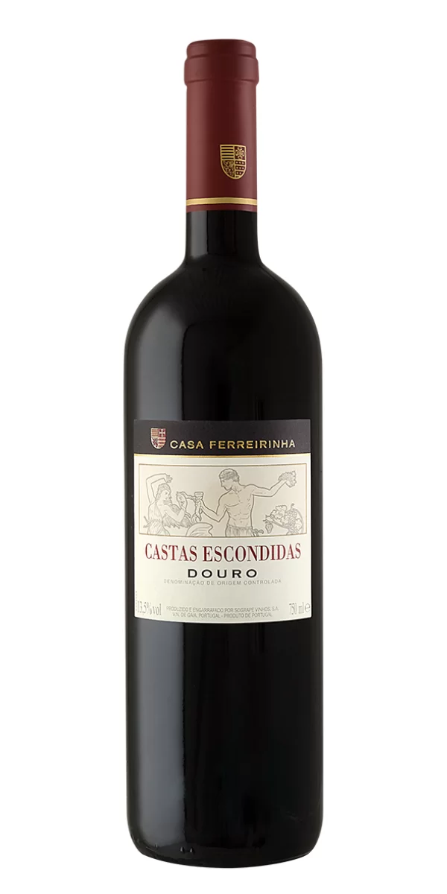
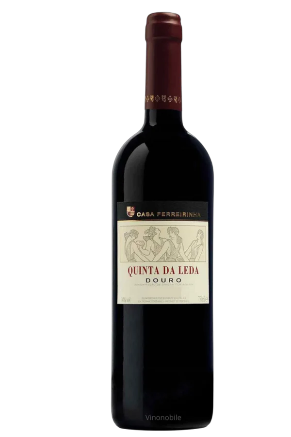
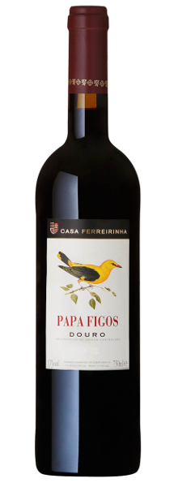
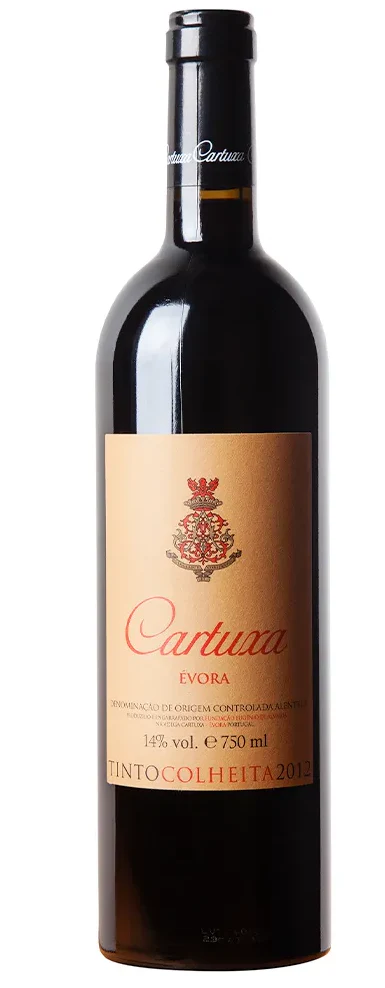
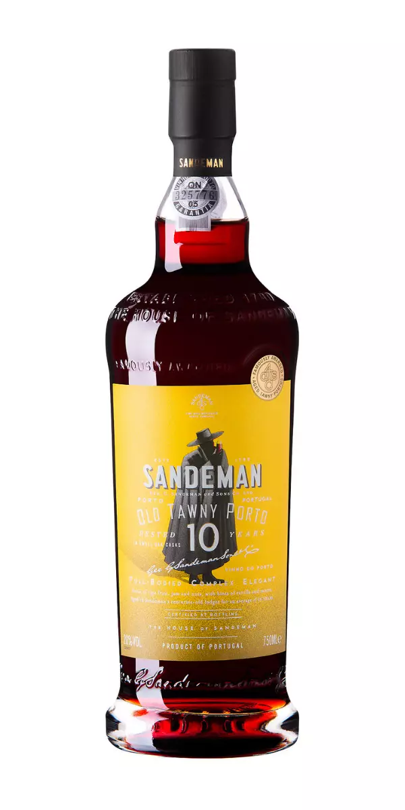
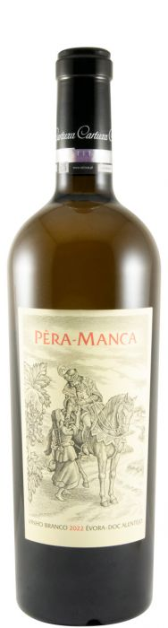

Tinto
O Castas Escondidas é um vinho tinto da casa portuguesa Casa Ferreirinha, da região do Douro.
É elaborado a partir de castas menos comuns para destacar a diversidade da região, com aromas complexos de especiarias e frutas vermelhas, e um sabor elegante e persistente.
Envelhecido por 18 meses em barricas de carvalho francês e é ideal para acompanhar carnes vermelhas e queijos maturados.
R$ 920,00

Tinto
O Quinta da Leda é um vinho tinto premium da Casa Ferreirinha, do Douro, conhecido por sua complexidade, elegância e longevidade.
Apresenta coloração rubi profunda e aromas intensos de frutas vermelhas maduras, especiarias, flores (como violeta), balsâmicos e notas de madeira de qualidade.
É volumoso, mas equilibrado, com acidez vibrante e taninos finos, e tem um final longo e persistente.
R$ 700,00

Tinto
Papa Figos é um vinho tinto português de grande sucesso, produzido pela renomada Casa Ferreirinha na região do Douro.
É conhecido por seu perfil elegante, frutado e mais leve, contrastando com os vinhos mais encorpados típicos da região, o que o torna muito versátil e fácil de beber.
R$ 170,00

Tinto
O Cartuxa Évora Tinto é um vinho português do Alentejo, conhecido por sua elegância e intensidade aromática.
É produzido pela Cartuxa, uma vinícola administrada pela Fundação Eugénio de Almeida, que faz uma homenagem aos monges Cartuxos.
O vinho apresenta aromas de frutas maduras, como ameixa, e notas de carvalho, com paladar estruturado e taninos macios.
R$ 220,00

Tinto
O Sandeman Old Tawny Porto é um vinho do Porto de cor avermelhada aloirada, com aroma complexo de frutas maduras, compota, frutos secos e notas de baunilha.
É um vinho de sabor encorpado e atraente, com um final persistente.
Harmoniza bem com sobremesas de caramelo ou frutas secas e pode ser servido com queijos fortes.
R$ 360,00

Branco
O Pêra-Manca Branco é um vinho português de prestígio do Alentejo, produzido pela Fundação Eugénio de Almeida, com um blend das uvas Antão Vaz e Arinto.
Caracteriza-se pela sua cor citrina, aromas frutados e minerais, e um paladar macio, complexo, seco e equilibrado.
É um vinho de longa guarda, ideal para harmonizar com peixes, mariscos, aves e massas.
R$ 670,00